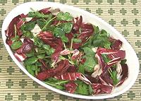

|
Radicchio & Watercress SaladEuro - American | ||||
| Serves: Effort: Sched: DoAhead: |
6 salad * 15 min Part |
Bitter lettuce and bitter herb softened by a honey sweetened dressing, a very pleasant easy to make salad. Make it soon after purchasing the radicchio and cress because neither keeps long. | |||
|
|
1 4 ------ 1/4 1/3 4 4 ------ |
# oz --- c c t t --- |
Radicchio Watercress -- Dressing Olive Oil, ExtV Lime Juice Dijon Mustard Honey ---------- |
Make: - (15 min) The dressing quantity listed will make a lightly dressed salad, make more if you like a lot of dressing.
|